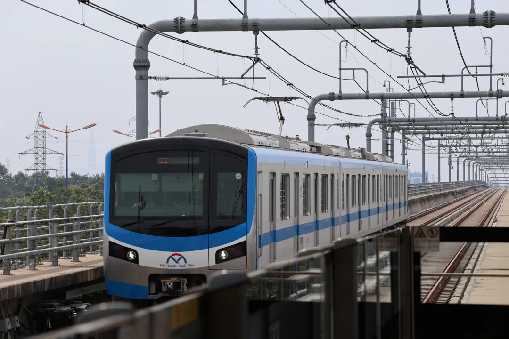
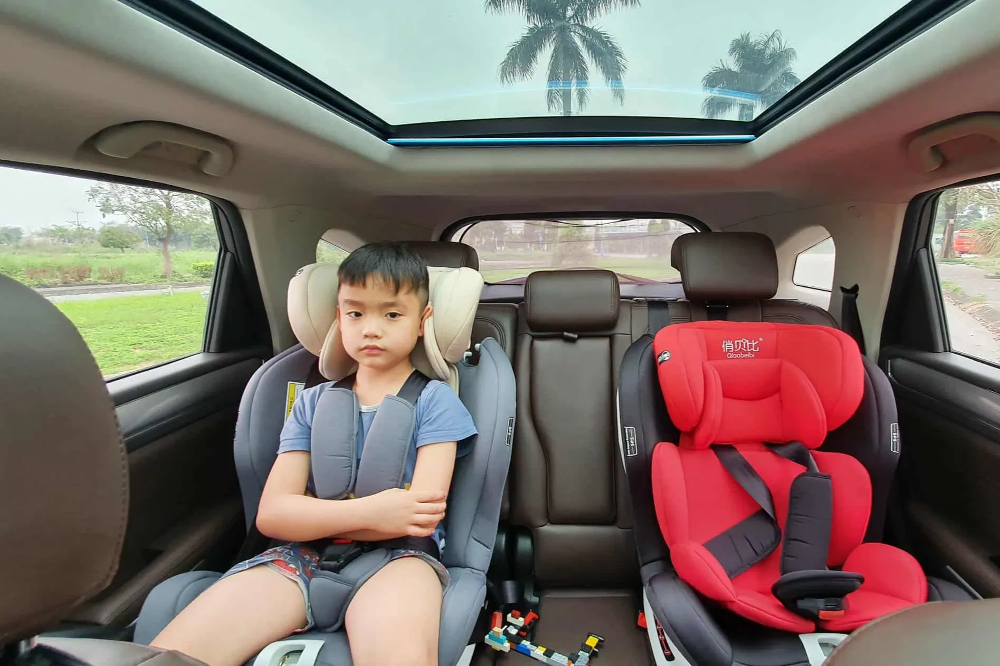
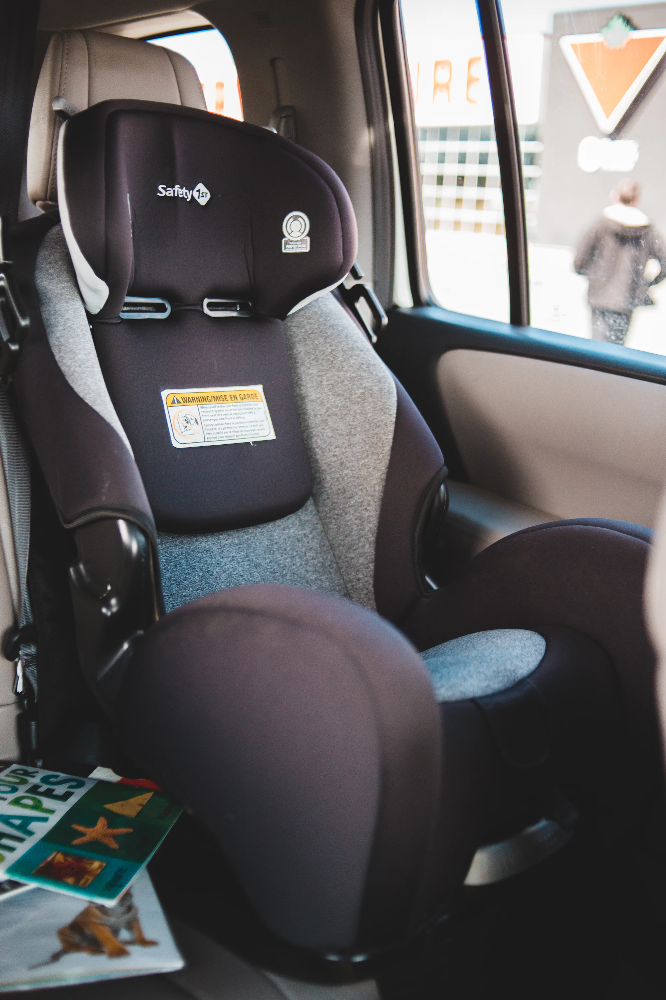
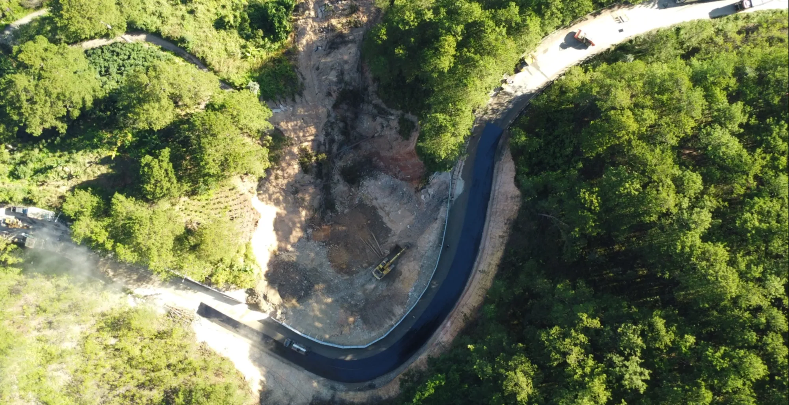

By Nguyễn Ngọc Minh Thư · 4 Tháng 12, 2025
Triều cường TP.HCM 5–6/12: 23 tuyến đường có thể ngập sâu
By Nguyễn Ngọc Minh Thư · 5 Tháng 12, 2025
Vĩnh Long Xây Cầu Đình Khao 2.800 Tỷ, Giảm Ùn Tắc và Tăng Kết Nối Quốc Lộ
By Nguyễn Ngọc Minh Thư · 3 Tháng 12, 2025
Lộ Trình Khí Thải Ô Tô: Áp Dụng Euro 5 Từ Khi Nào?

By Nguyễn Ngọc Minh Thư · 3 Tháng 12, 2025
Metro Bến Thành – Cần Giờ chuẩn bị động thổ vào tháng 12/2025

By Nguyễn Ngọc Minh Thư · 3 Tháng 12, 2025
TP.HCM lắp camera tự động xử phạt xe không đạt chuẩn khí thải vào trung tâm từ năm 2026

By Nguyễn Ngọc Minh Thư · 3 Tháng 12, 2025
Vingroup đề xuất cầu vượt biển 11 km nối Cần Giờ – Vũng Tàu

By Nguyễn Ngọc Minh Thư · 3 Tháng 12, 2025
TP HCM: Phạt đến 400.000 đồng khi vào vùng hạn chế khí thải

By Nguyễn Ngọc Minh Thư · 3 Tháng 12, 2025
Xe kinh doanh có bắt buộc lắp ghế an toàn cho trẻ không?

By Nguyễn Ngọc Minh Thư · 2 Tháng 12, 2025
Cập nhật quy định mới khi chở trẻ em trên ô tô từ 2026

By Nguyễn Ngọc Minh Thư · 1 Tháng 12, 2025
Cục CSGT đề xuất cho phép người dân chỉ sử dụng giấy phép lái xe điện tử

By Nguyễn Ngọc Minh Thư · 1 Tháng 12, 2025
Hai mẫu SUV Trung Quốc đầu tiên lắp ráp tại Việt Nam: Omoda 4 và Jaecoo J5

By Nguyễn Ngọc Minh Thư · 1 Tháng 12, 2025
Đèo Mimosa – Đà Lạt chính thức thông xe trở lại sau hơn 10 ngày sạt lở